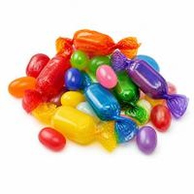
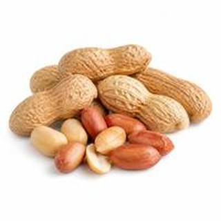
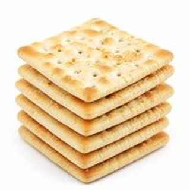
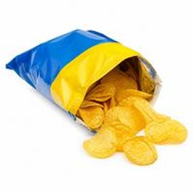
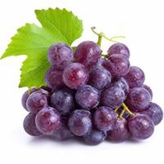

看動畫學句型！按「1／2／3」，字會自己飛，一步一步變成新的句子。每個句型再看 5 句例句，最後 12 題自己填，會的話得星星 ⭐

candy糖果
peanuts花生
crackers蘇打餅乾
potato chips洋芋片
grapes葡萄| 句型 | 回答 | 例句 |
|---|---|---|
| some／any 一些／任何 | 有 → some 沒有 → any | I have some crackers. I don't have any potato chips. |
| Where is ...? …在哪裡？ | He's／She's in ... | Where is Ted? He's in the library. |
| Is ... walking? …正在…嗎？ | Yes, he is. No, he isn't. | Is John walking? No, he isn't. |
| Does ... talk? 他／她會…嗎？ | Yes, she does. No, he doesn't. | Does Lina talk on the phone? Yes, she does. |
| Do you ...? 你會…嗎？ | Yes, I do. No, I don't. | Do you eat breakfast? No, I don't. |
| Is there a ...? 有一個…嗎？ | Yes, there is. No, there isn't. | Is there a clock on the table? Yes, there is. |
| Can ... swim? …會…嗎？ | Yes, they can. No, they can't. | Can they swim? No, they can't. |